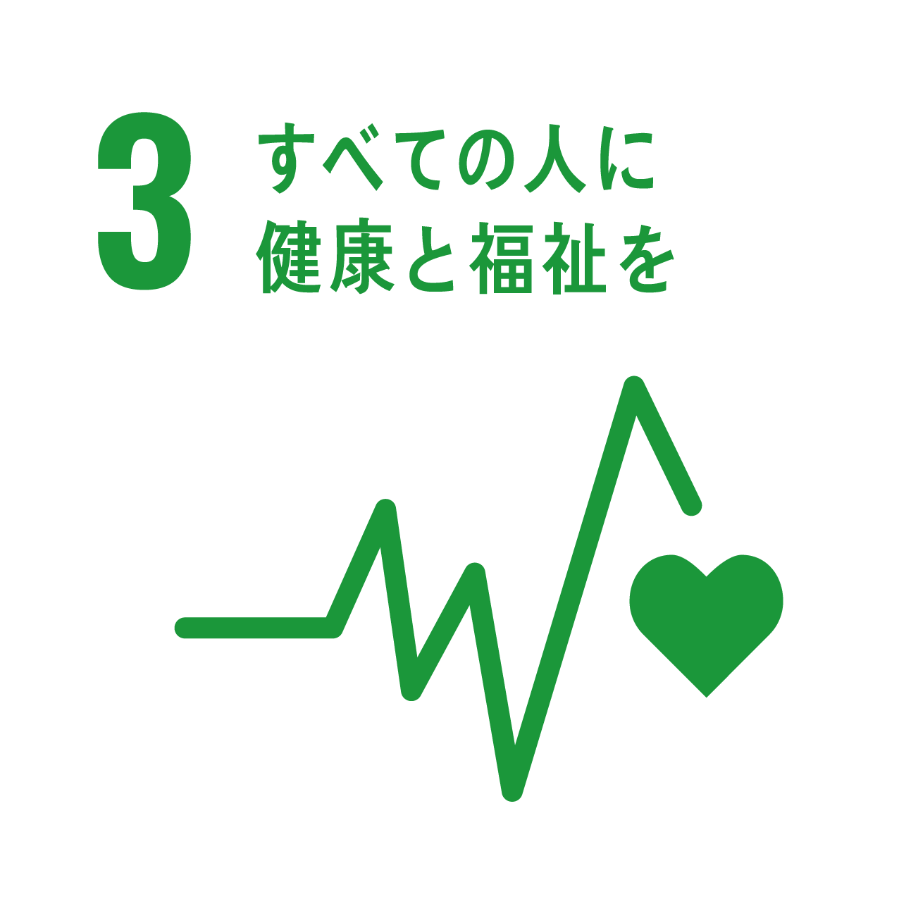
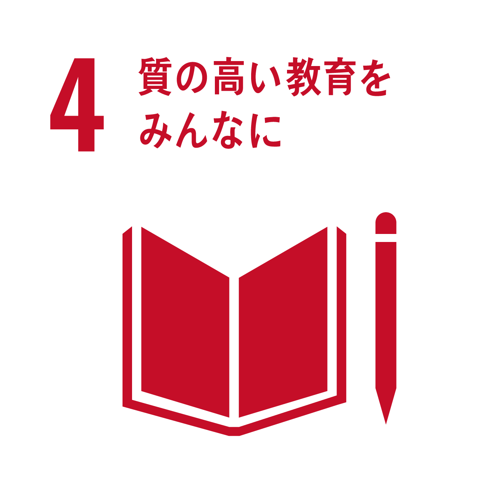
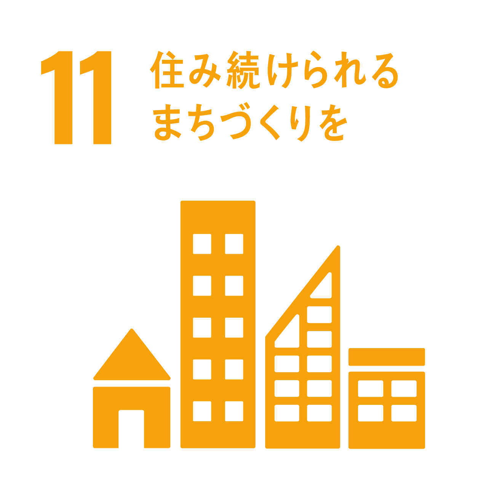
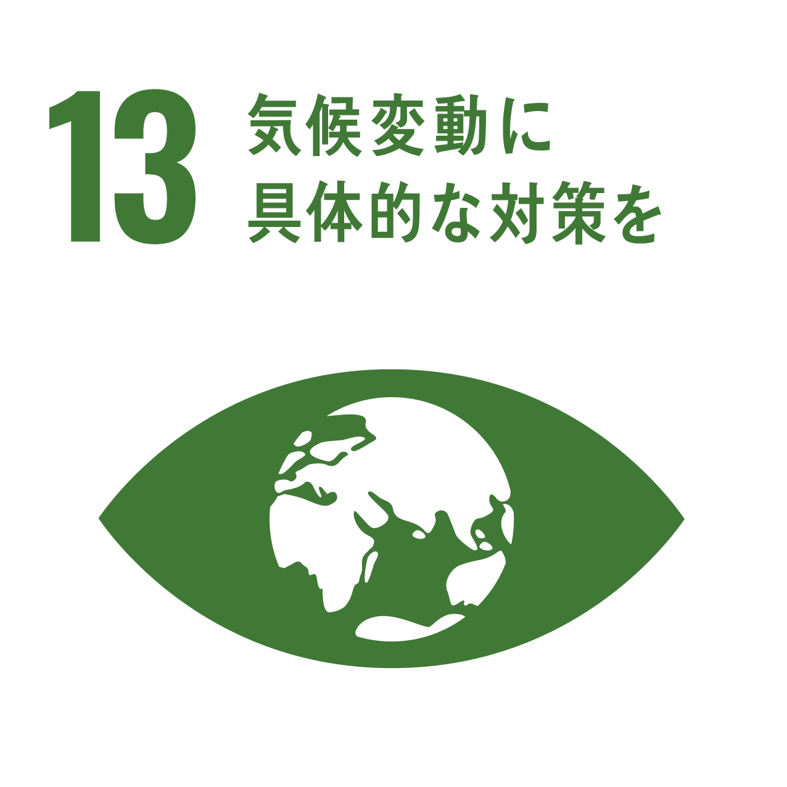
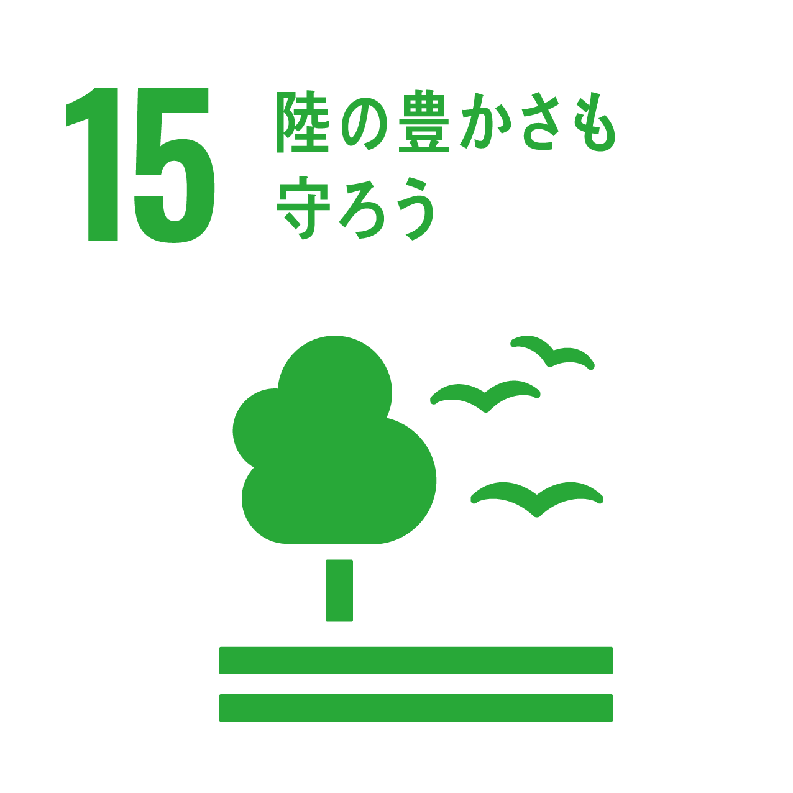

半日コース(レンタルサイクルあり)
愛知川宿を巡るサイクリングコース。出発地のるーぶる愛知川でレンタルサイクルも借りられる ため、誰でも身軽にサイクリングが出来ます。 また、コース内では趣のある建物や美味しいグルメもあり 楽しめるコースになっています。最後の彦根駅で自転車の返却も出来るので気軽に参加出来るのが 魅力です。
長良川の大自然を満喫出来るコースで 参加者に女性が多いのも魅力の一つです。 レンタルサイクルやヘルメットやガイド料金が含まれていて手ぶらで参加できます。 必要であれば帽子やサングラス、雨合羽などの雨具があると良いかもしれません。 おおよそ４時間で終わるコースなので、走り終わったら近くの旅館に泊まって温泉を楽しむのも 良いかもしれませんね。
千曲川周辺の名所を巡るルートになります。 コチラもレンタルサイクルのサービスがあり、低料金で車種が選ぶことが出来ます。 春には桜や菜の花を眺めながら気持ちよく走ることも出来ます。 また、コチラのサイトには他のアクティビティも豊富に提供されていますので 気になるツアーがあればそのままご予約も出来ます。
ロングコース（１～２日）
こちらはサイクリストの聖地と呼ばれているしまなみ海道サイクリングロードとなります。 全長７０ｋｍ、広島から愛媛県今治までを繋ぐ橋と４つの島で構成されています。 魅力としては、自転車で海を越えられること、自転車と歩行者の専用道路があること サイクルピットや観光スポットが細かく設置されいること各島に宿泊施設や飲食店 やお土産店があること。 そしてレンタルサイクルがあり、各サイクルピットに乗り捨て可能な事です。 フェリーで往来もでき、自転車のまま乗船も可能で出発点では持ち込み自転車の 組立エリアもあります。 初心者の方でも約１０時間で走破できますし、中には結婚式も挙げられるプランもあります。 勾配も少なめでとても走りやすく、２０２４年までは自転車の方は通行料が無料となりますので 是非訪れてみてください。
初心者の方や長距離はちょっと自信のない女性にもオススメのコースが浜名湖となります。 １周約６７ｋｍなのでゆっくり走っても８時間程度と日帰りで走ることも出来ますし 舘山寺温泉やサイクリスト歓迎の民宿や旅館などの宿泊施設もありますので １泊して周辺の散策や、うなぎパイファクトリーへの寄り道など、周辺にも魅力的な スポットがたくさんあります。 また、レンタサイクルやサイクリストサポートショップを記したマップも配布されています ので安心して走ることが出来ます。 上記のSHIZUOKA CYCLINGにはハマイチ以外のオススメコースもあるので一度ご覧になって 気になるコースを走ってみるのもいいと思います。
イベント（自転車持参or実走行で！）
2023年度が初開催となる熊野町のサイクリングイベントとなります。 太平洋岸自転車道がナショナルサイクルルートに認定されたことでコースの一部をプロ選手と 交流しながら完走することを目的としたイベントです。 初心者から中級者向けの50kmのコースと上級者向けの112kmのコースがあり、実力に合わせて 申し込みが出来ます。 併設イベントとして、ケミカルメーカーのWAKO’S社による無料洗車も開催されるので自転車の お手入れを学ぶことも出来ます。
茨城県石岡市を巡るサイクリングイベントです。 48.9kmのコースはフルーツラインを走るちょっとアップダウンのあるコース 68.3kmのコースは朝日峠を登る最大斜度８％のコースとなります。 ただ、目的は美味しいものを食べて、いい景色を眺めて無事に完走すること。 実力にあったコースを走って楽しみましょう。
自転車がもたらすカラダとココロの健康 ジョギングやランニングに比べて自転車は足や膝への負担が少ないことから、日頃 あまり運動をしていない人が始めてもケガをしにくいメリットがあります。 それでいて全身を使う有酸素運動なので心肺機能の強化や筋力アップやダイエット 効果があるうえに生活習慣病やロコモティブシンドロームの予防ひいては健康寿命 の延伸まで期待できるともいわれています。 そこで、自転車を活用した健康づくりに関する広報を積極的に展開していきます。
国土交通省のGOOD CYCLE JAPAN推進に伴い、警察庁が以前から 推進している自転車安全利用五則の活用をお願いしております。 安全な運行、事故防止、歩行者保護の元に自転車、歩行者、自動車が安全安心に 利用できる道路利用を心がけましょう。 また、自転車は違反した場合には赤キップや自転車指導警告カードを交付され、場合によっては 罰則となり違反金や安全講習を受けなければならなくなります。 赤キップの交付は交通裁判所への出頭が必要になり、出頭しない場合には起訴相当となります。

前面ライトは自動車でいうところのフロントライトにあたります。 夜間のライトの使い方は点滅ではなく点灯が必須となります。 無灯火で走ることは違反となります。 あわせて点滅での使用は注意を受けることとなります。 このライトは自動点灯機能付のライトなので設定すれば暗くなると自動で点灯 するのでオススメです。 --サイクルベースあさひ ムーン[MOON] METEOR C3（メテオ ストーム C3）--

後面ライトは自動車でいうところのポジションライトにあたります。 後面ライトは後続車に自分の存在をアピールするものです。 夜間はこれがないと追突されたり、幅寄せされるおそれがあります。 昼中でもつけておくとより安全です。 このライトは自動点灯機能付のライトなので暗くなったときや 乗車中の振動で自動的に点灯します。 --キャットアイ[CATEYE] TL-AU620-R（RAPID micro AUTO）--

ヘルメットについては装着が努力義務となっています。 よほどの理由がない限りかぶらなくてはいけません。 でも、自転車に合わないデザインはイヤという方にはこちらがオススメです。 バイザーの脱着が可能で、ポジションも合わせやすいのでグラグラしにくい 設計となっています。 どんな服装にも合わせやすいので通勤で使うサラリーマンもいます。 一時期は品薄でしたが、今は多少手に入りやすくなっていると思います。 --OGK カブト キャンバス・アーバン--

あると便利なものの一つがカゴですよね。
コチラの商品はあとから取り付けができて、外すとそのままショッピングバッグに
なる便利なカゴです。
自転車本体には別売りのアタッチメントだけを取り付けてカゴは必要に応じて取り外しが
可能です。
フタが巾着式なので中身を見られずに買ったものを持ち帰れますよ。
--リクセンカウル ショッパーコンフォート /KF825/--

愛車を盗まれないために必須なのがチェーンロックです。 中でも広いシェアを誇るABUSのチェーンロックは世界で愛されています。 コチラは車体を傷つけない様にスリーブがついており、高耐久で雨にも強い作り となっています。 さらにコチラのブランドは鍵のセキュリティレベルによりますが、購入後３年間は が支払われる保証制度がありますので、購入時のレシートは保管しましょう。 --ダイアテック IVERA CHAIN 7210/110--

もし盗まれたら！
そんな時はAirTagでどこにあるかを探せるかもしれません。
ただ、取り付けた場所がバレては意味がないですよね。
これならどこにでも取付可能なので、ホイールのハブ部に取り付ければ
スピードセンサーと見分けがつかないので便利ですよ。
--REC MOUNT AirTag エアタグ 用 ケース「ゴムバンド式」--


地方創生とは･･･地方創生とは、少子高齢化の進展に的確に対応し、人口の減少に歯止めをかけるとともに、 東京圏への人口の過度の集中を是正し、それぞれの地域で住みよい環境を確保して、将来にわたって活力ある 日本社会を維持していくことを目指すものです。 地方創生 内閣官房





近年、地方創生の一環として取り組まれているサイクルツーリズム。 訪問者のメリットとしては自分のペースでゆったりと観光が出来ること、健康的であること、運動障害の 防止ができることです。 一方、地元の人達のメリットは観光地以外にも人が来てくれること、土地のことを知ってもらえること 名産品や名物料理を広めることも出来ます。 最近ではサイクリングイベントやレース、タイムトライアルなどのイベントが開催されることもあり 都会から地方へ出向く人も増えており、注目されいます。